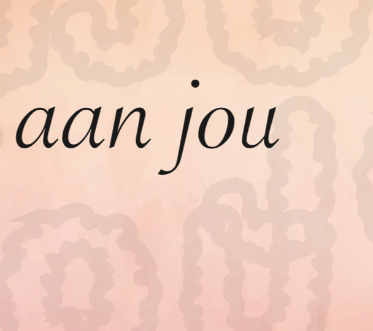
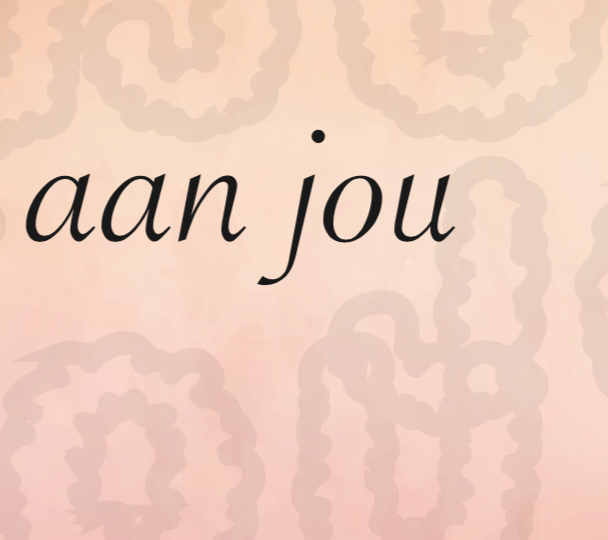
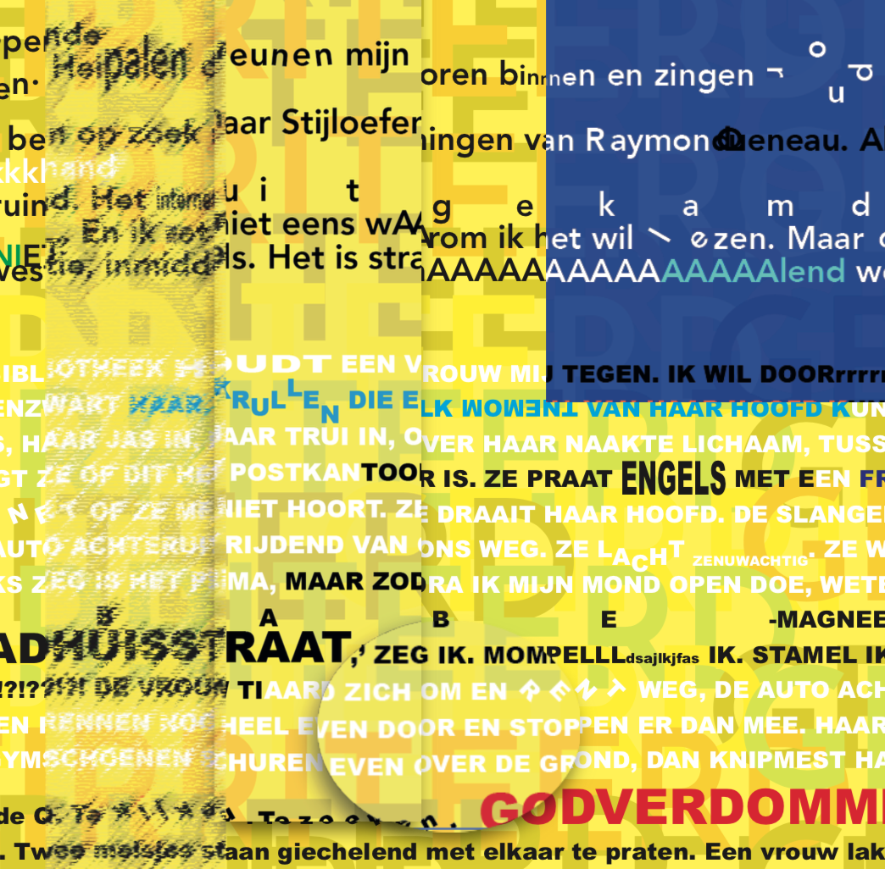
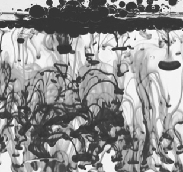
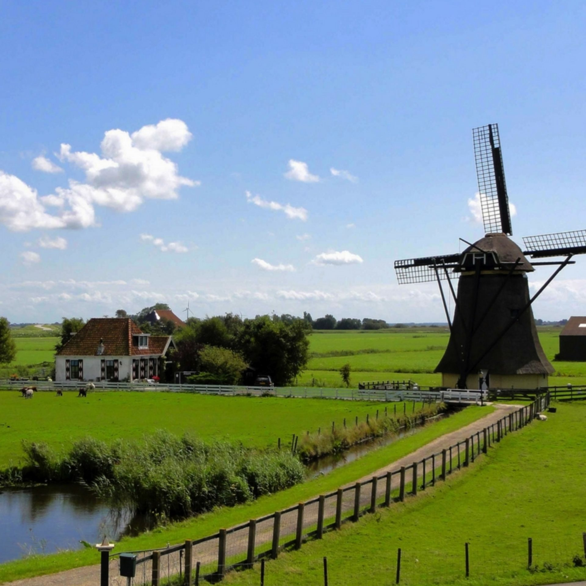
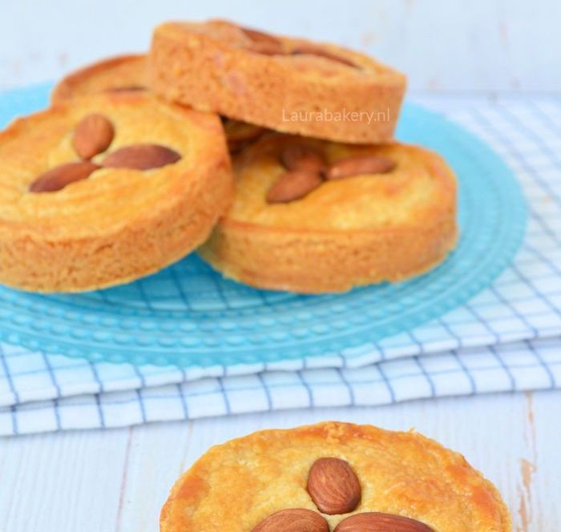
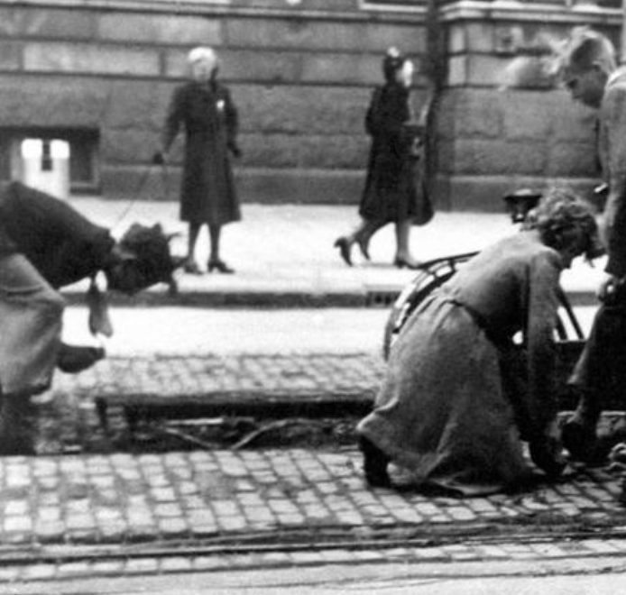
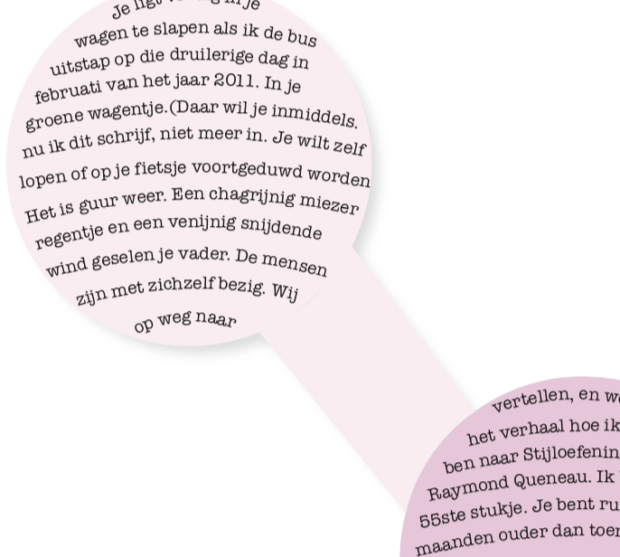

Licht van mijn leven. Ik stapte vandaag bus 21 uit. Het was op het midden van de dag.
- 569
- 352
-
 233
233
Licht van mijn leven. Ik stapte vandaag bus 21 uit. Het was op het midden van de dag.
Ik stap uit die godverdomde stinkbus. De mensen krioelen als mieren over het stationsplein.
Vroem. Tuut tuut. Whèèèh!! Die! Die! Whèèèh! Die! Die! Hjumhjumhjum. Zzzzzzzzzz.* Zzzzzzz.** Zzzzzzz
Zodra ik de bus uitstap steek ik een dikke vette joint op. De derde van de dag al.
Kraak de code en win een romantisch etentje met de verwarde man.

Ik stap dus op ut stationsplein in dieën groâte stad uut dieën bus, met mien zoân in zijne keierwoâguh.
Je zocht een boek van Raymond Queneau Stijloefeningen was het geheten
Een stofwolk ontneemt het zicht op de wegrijdende postkoets.

Dit gerecht is vrij eenvoudig te maken. Ideaal op een doordeweekse dag.

Ik sluip de bus uit. Kop in de kraag. Ik maak me klein en duw m’n zoon vooruit. Hij slaapt. Eindelijk.

Mijn voeten en handen heb ik ingezwachteld tegen de kou. Kranten tegen m’n borst.
Je ligt vredig in je wagen te slapen als ik de bus uitstap op die druilerige dag in februari.
